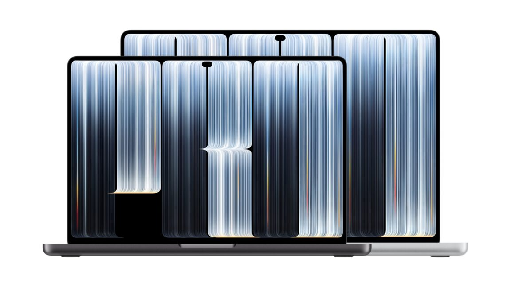

Technology · 29 Oct 2026
Apple announces touchscreen MacBook Pro with OLED display

The OLED display is the main draw, but the price is a lot to reckon with.
Multiple independent publishers are reporting on the same development: Apple announces touchscreen MacBook Pro with OLED display.
The available reports place the development in the Technology category. The accounts were compared for agreement on the central event rather than simply shared names or broad topics.
One of the available reports describes the development this way: The OLED display is the main draw, but the price is a lot to reckon with.
Readers should consult the linked source reports for additional context, updates and details that may change as the story develops.
Sources
This article was produced by the C. O. Eric AI Newsroom from the cited sources. It is published only after automated evidence and safety checks.